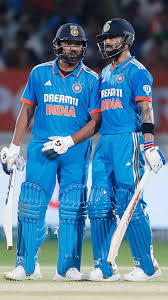

CRICKET

Facts of Cricket :
- Longest Test Match:
-
The longest cricket match in history was a Test between England and
South Africa in 1939. It lasted for 12 days and still ended in a draw
because England had to catch a boat back home!
- Sachin Tendulkar's Record:
-
Sachin Tendulkar holds the record for the most runs in international
cricket, with over 34,000 runs across Test matches and One Day
Internationals (ODIs).
- First Cricket World Cup:
-
The first Cricket World Cup was held in 1975 in England, and the West Indies won the inaugural tournament by defeating Australia.